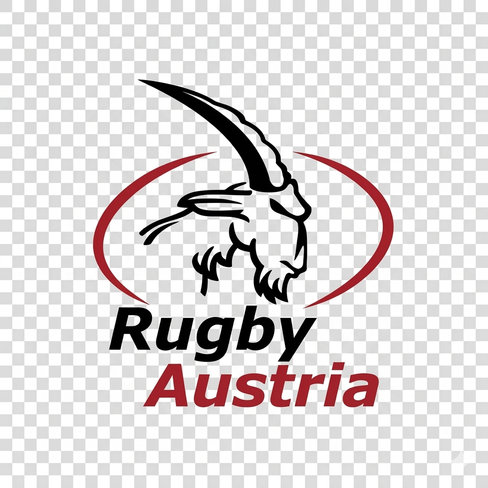

01
REPRESENT
Wear the jersey with respect.
Be on time. Be coachable. Bring energy.
Your behaviour shows the standard before the game starts.

A national-team environment built for role clarity, shared language, and campaign readiness. Every section helps the squad understand how Austria wants to play, prepare, and represent the jersey under pressure.
The game model is the shared picture the squad is selected to execute. It defines how Austria should look under pressure, not just what to call.
Austria attack language should shorten decisions, not complicate them. The system exists to give the squad one clear picture at speed.
The defensive system is built to look collective at speed: connected inside-out, physically honest, and clear in the red zone.
Set piece is one contest area. Austria should leave it with either launch quality, territorial gain, or direct scoreboard pressure.
The Final 23 layer gives players a clear picture of how units connect inside the match-day squad. Every role still has to understand attack, defence, and set piece detail so the team can connect quickly with limited campaign time.
This hub holds the competition-facing layer of the program: opponent prep, campaign rhythm, review notes, and the evidence used to support preparation and selection decisions.
This environment is built to reduce noise. The squad is selected to execute a clear model, not to learn a new language every week.
The program expects players to bring their strengths from domestic environments into a national framework that is fast to install, competition-ready, and connected under pressure.
Austria Youth is the next generation of the national team.
Players arrive from different clubs, but here we build one standard, one language, and one identity.
We aim high, we compete with intent, and we prepare to step into the senior level.
Wear the jersey with respect.
Be on time. Be coachable. Bring energy.
Your behaviour shows the standard before the game starts.
We do not wait to grow into the match.
We contest early, defend with intent, and stay connected under pressure.
Good teams have strong moments.
Serious teams finish actions, sessions, and games.
We stay in the fight until the job is done.